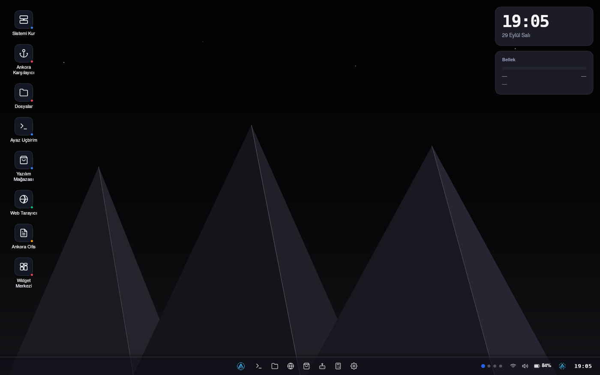
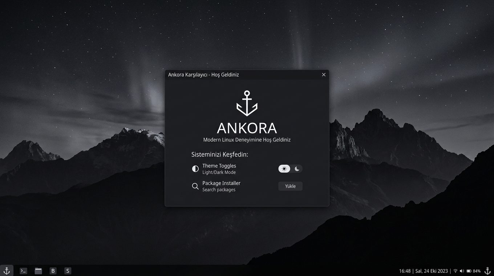

Erwecken Sie Ihren alten Computer zum Leben
Ankora Linux ist ein schlichtes türkisches Betriebssystem für den Alltag. Es ist leicht, einfach zu installieren und bringt alles mit, was Sie brauchen.

Drei einfache Gründe
Leicht
Im Leerlauf nutzt es etwa 750 MB Arbeitsspeicher. Eine Vergleichstabelle gibt es auf der Startseite.
Türkisch
Vom Installer bis zum Desktop ist alles auf Türkisch. Sie müssen keine englischen Begriffe nachschlagen.
Einfach zu installieren
Auf einen USB-Stick schreiben und starten. Der Assistent führt Sie Schritt für Schritt, ganz ohne Terminal.
Sofort einsatzbereit
Sie müssen keine Programme einzeln installieren. Die Werkzeuge für den Alltag sind schon da.
- Webbrowser
- Dateimanager
- Dokument- und Fotobetrachter
- Notizen und Taschenrechner
- App-Store
- Ein-Klick-Aktualisierung

Vergleich mit verbreiteten Distributionen
Speichernutzung des leeren Desktops. Der Ankora-Wert wurde mit free -m auf dem installierten System gemessen; die übrigen Werte stammen aus den auf der Seite genannten Quellen.
| Distribution | Speicher im Leerlauf |
|---|---|
| Ankora Linux 3.0 | ~750 MB |
| Ubuntu 24.04 (GNOME) | 830 MB |
| Linux Mint 22.1 (Cinnamon) | 888 MB |
| Xubuntu 24.04 (Xfce) | 668 MB |
| Lubuntu 24.04 (LXQt) | 464 MB |
| Debian 12 (GNOME) | über 1 GB |
Ankora: free -m-Ausgabe auf dem installierten System nach dem Anmelden am Desktop (Oktober 2026). Andere: Messungen von Android Authority aus Oktober 2024; für Mint ein unabhängiger Testbericht (888 MB). Hardware, Versionen und Methoden unterscheiden sich; die Werte sind Näherungswerte.
In drei Schritten bereit
Herunterladen
Laden Sie die ISO-Datei herunter. Eine Prüfdatei liegt daneben.
Auf einen USB-Stick schreiben
Schreiben Sie die ISO mit einem kostenlosen Programm auf einen leeren USB-Stick.
Starten und installieren
Starten Sie den Computer vom USB-Stick. Der Assistent erklärt den Rest.
Häufige Fragen
Was ist Ankora Linux?
Ein schlichtes türkisches Betriebssystem für Alltagsnutzer. Es basiert auf Devuan und bringt eine eigene Desktop-Umgebung mit, Ayaz DE.
Läuft es auf einem alten Computer?
Ja. Im Leerlauf nutzt es etwa 750 MB Arbeitsspeicher. Es läuft problemlos auf einem Laptop mit 2 GB Arbeitsspeicher; sehr alte Rechner mit 1 GB werden nicht empfohlen.
Was kostet es?
Nichts, es ist völlig kostenlos. Der Quellcode ist offen.
Wie installiere ich es?
Schreiben Sie die ISO auf einen USB-Stick und starten Sie den Computer davon. Der Installer führt Sie Schritt für Schritt.